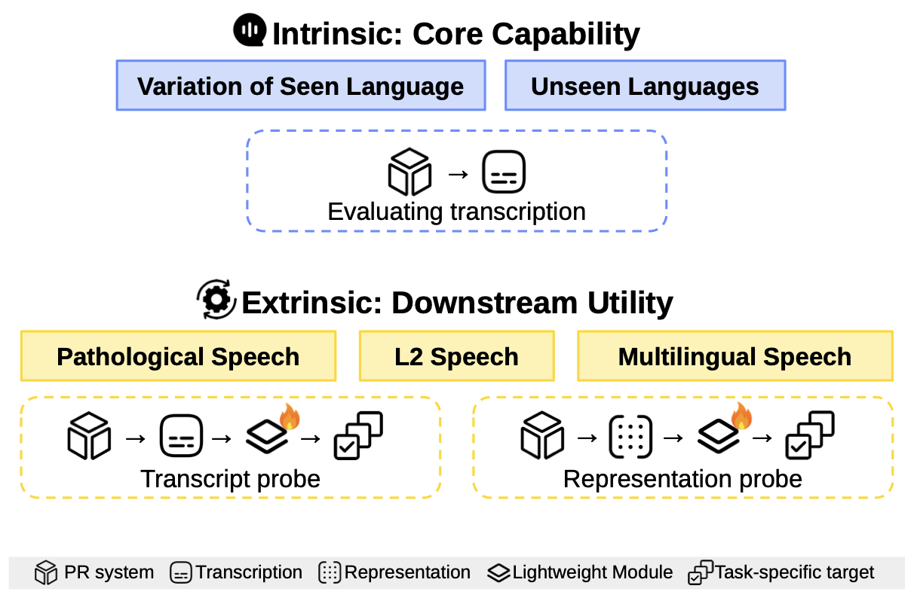
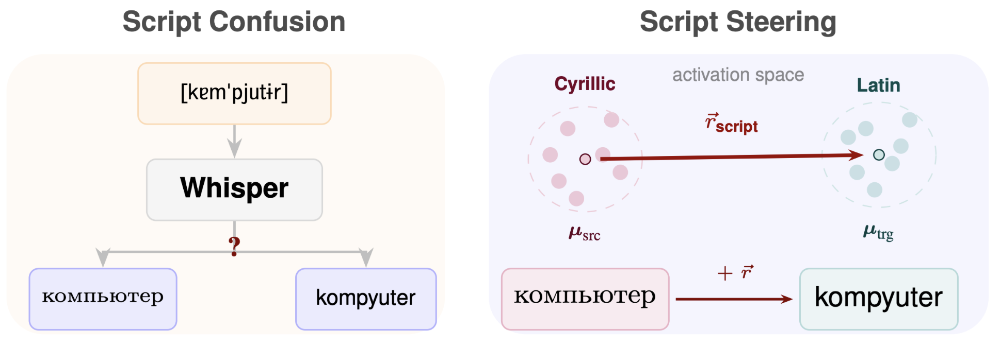
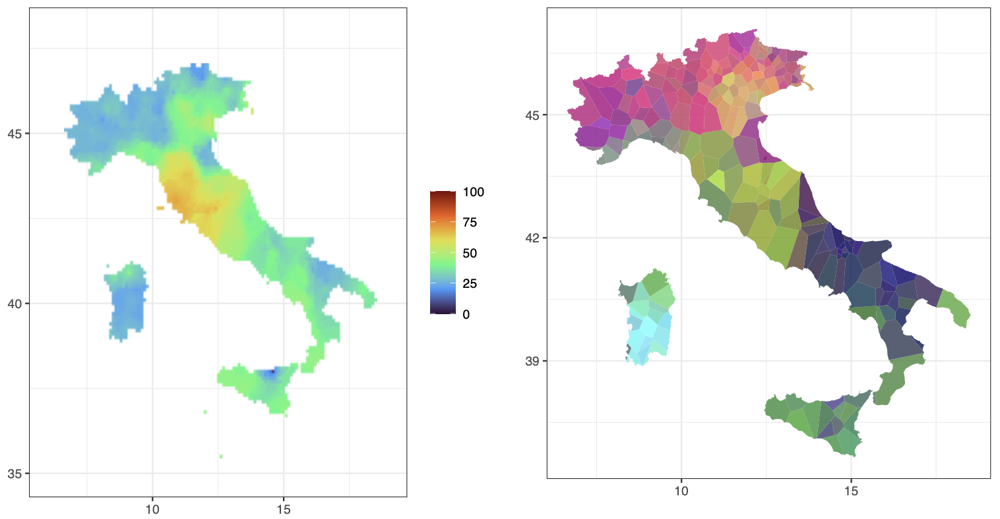
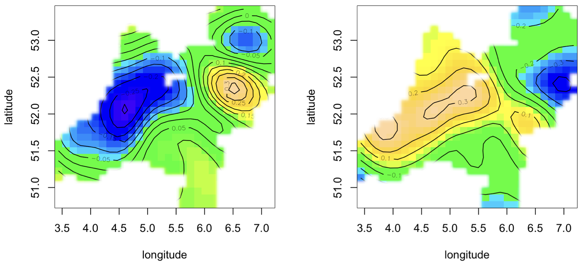

About
I am a PhD candidate at the Center for Information and Language Processing (CIS) at Ludwig Maximilian University of Munich, supervised by Barbara Plank. I am also affiliated with MCML and MaiNLP.
My research sits at the intersection of speech processing, linguistic diversity, and interpretability. I am particularly interested in: (1) how speech and language models represent phonetic, dialectal, and typological variation across the world's languages, and (2) data-efficient methods to adapt speech models to dialect variation. I am also a big fan of making and eating Korean-Italian fusion cuisine.
News
- 2026 🎉 Two papers accepted to ACL 2026: PRiSM: Benchmarking Phone Realization in Speech Models (main) and Linear Script Representations in Speech Foundation Models Enable Zero-Shot Transliteration (findings)
- 2025 🎉 Paper accepted to NAACL 2025 findings: Dialetto, ma Quanto Dialetto? Transcribing and Evaluating Dialects on a Continuum
Publications
- 2026
-

ACL 20262026ConferenceWe propose a benchmark testing how different speech representations (such as phoenemes and embeddings) compare on a range of downstream tasks. -

ACL 2026 Findings2026ConferenceWe show that speech foundation models such as Whisper encode writing scripts linearly in their representation space, enabling zero-shot transliteration across scripts (e.g. Cyrillic Italian, Romanized Japanese). - 2025
-

NAACL 2025 Findings2025ConferenceWe show dialect continua to be a geographically grounded phenomena, where geographical information serves as useful information for dialect tasks such as ASR performance prediction on dialects. - 2024
-

LREC-COLING 20242024ConferenceWe empirically show equi-complexity to hold on dialects, where phonotactic complexity and word length stand in a trade-off, with urban regions exhibiting lower phonotactic complexity but higher average word length. - 2022
-
 VarDial Workshop2022WorkshopWe present an R package for dialectometry, providing tools for computing standard linguistic distance measures and visualizing dialect variation across geographic space.
VarDial Workshop2022WorkshopWe present an R package for dialectometry, providing tools for computing standard linguistic distance measures and visualizing dialect variation across geographic space. -
 SIGMORPHON Workshop2022WorkshopWe combine data-driven and rule-based approaches for morphological inflection, with competitive performance across typologically diverse languages in the shared task.
SIGMORPHON Workshop2022WorkshopWe combine data-driven and rule-based approaches for morphological inflection, with competitive performance across typologically diverse languages in the shared task.
Preprints
- 2026
-
 arXiv:2603.224972026PreprintWe propose a cipher-based framework for testing in-context language learning in LLMs, where cipher-transformed text simulates a novel language unseen during training.
arXiv:2603.224972026PreprintWe propose a cipher-based framework for testing in-context language learning in LLMs, where cipher-transformed text simulates a novel language unseen during training. -
 arXiv:2601.158092026PreprintWe show that inference-time steering vectors improve multilingual generalization in evaluation metrics, demonstrating that mechanistic interpretability methods can yield practical cross-lingual gains.
arXiv:2601.158092026PreprintWe show that inference-time steering vectors improve multilingual generalization in evaluation metrics, demonstrating that mechanistic interpretability methods can yield practical cross-lingual gains. - 2025
-
 arXiv:2505.196062025PreprintWe show that language representations in Whisper-style encoders cluster by both phonetic and semantic similarity, revealing how multilingual information is organized in speech foundation models.
arXiv:2505.196062025PreprintWe show that language representations in Whisper-style encoders cluster by both phonetic and semantic similarity, revealing how multilingual information is organized in speech foundation models.